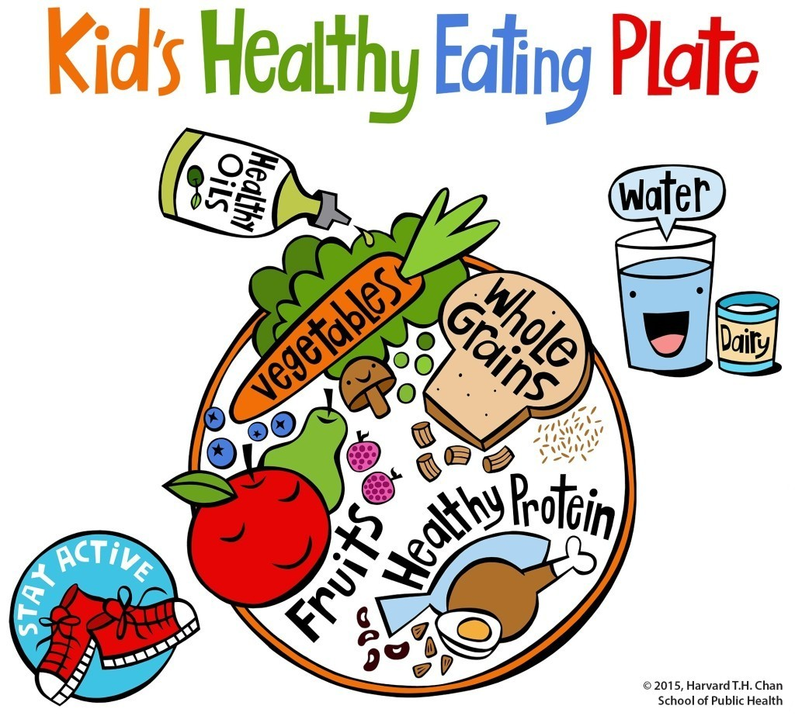

The CDC recommends that children and adolescents include three types of physical activity each week, including-
- Aerobic activities.
- Try jump rope, dancing, martial arts or running in place.
- Muscle-strengthening activities.
- Bone-strengthening activities.
- Pushups (against the wall, on their knees or full pushups).
- Step-ups (either with a “step” or up and down the stairs).
- Circle jumps (small rings or hula hoops or tape marks).
- Squats.
- Balance on one leg.


Exercises of Childrens
Diet and Nutrition plan-
The more veggies – and the greater the variety – the better. Potatoes and French fries don’t count as vegetables because of their negative impact on blood sugar. Eat plenty of fruits of all colors. Go for whole grains or foods made with minimally processed whole grains. The less processed the grains, the better. Whole grains—whole wheat, brown rice, quinoa, and foods made with them, such as whole-grain pasta and 100% whole-wheat bread—have a gentler effect on blood sugar and insulin than white rice, bread, pizza crust, pasta, and other refined grains. Limit red meat (beef, pork, lamb) and avoid processed meats (bacon, deli meats, hot dogs, sausages). Use healthy oils from plants like extra virgin olive, canola, corn, sunflower, and peanut oil in cooking, on salads and vegetables, and at the table. Limit butter to occasional use. Milk and other dairy products are a convenient source of calcium and vitamin D, but the optimal intake of dairy products has yet to be determined and the research is still developing. For children consuming little or no milk, ask a doctor about possible calcium and vitamin D supplementation. Water is the best choice for quenching our thirst. It’s also sugar-free, and as easy to find as the nearest tap.